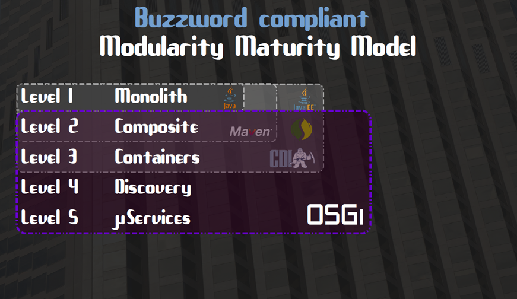
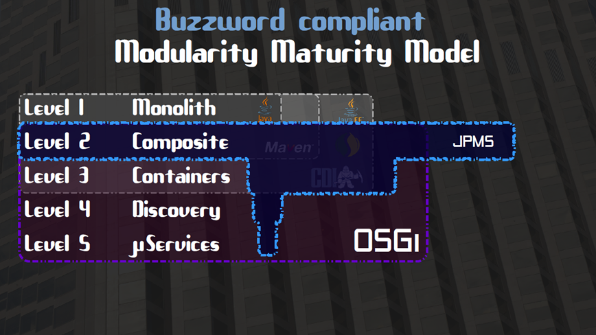
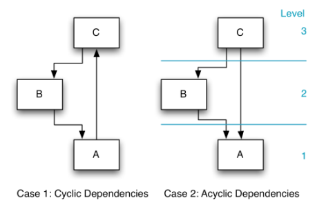
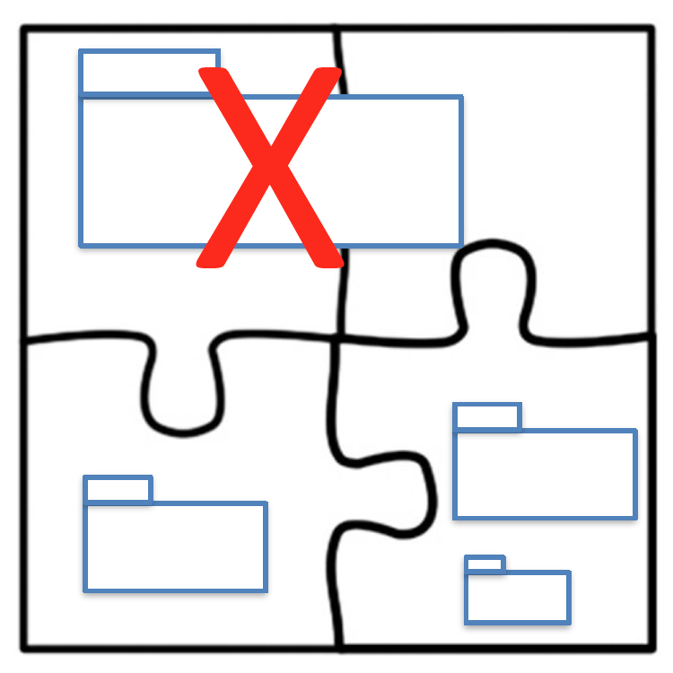
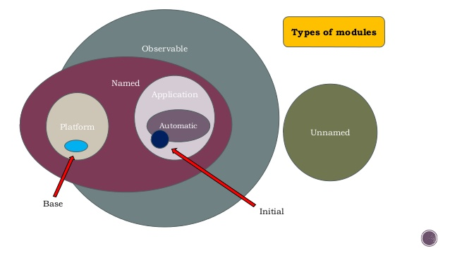
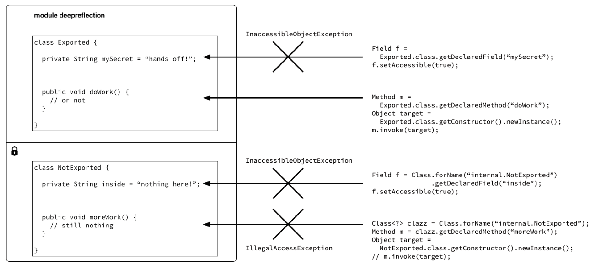
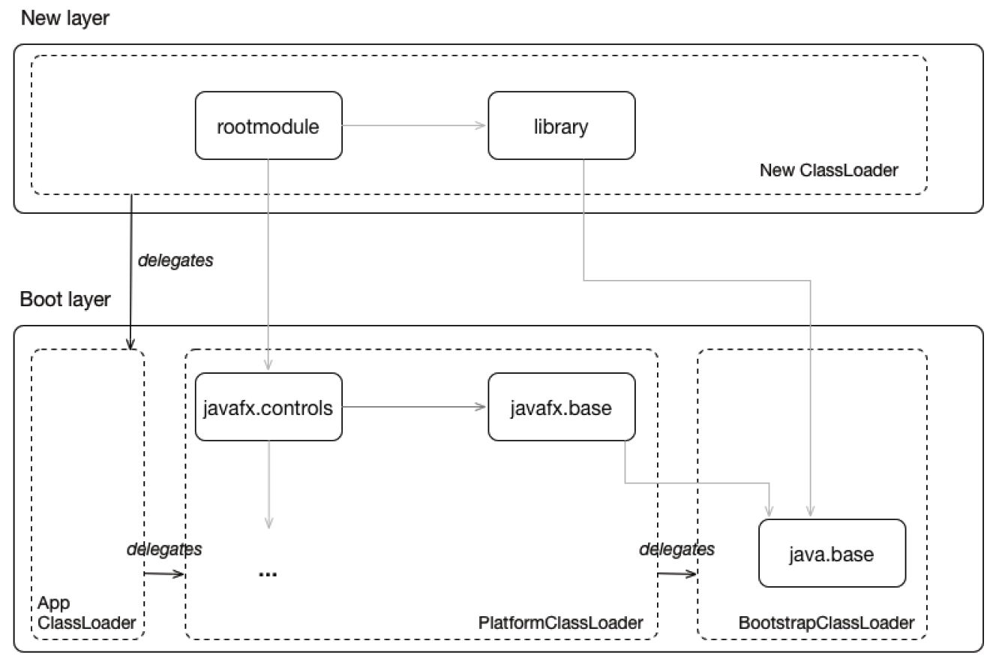
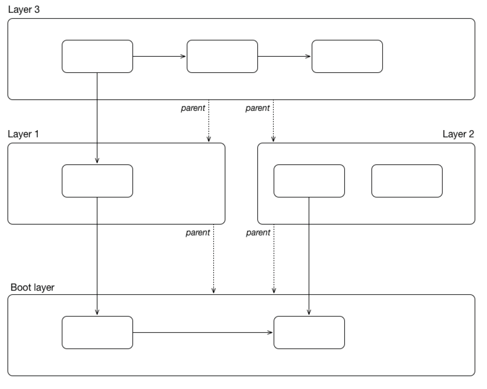
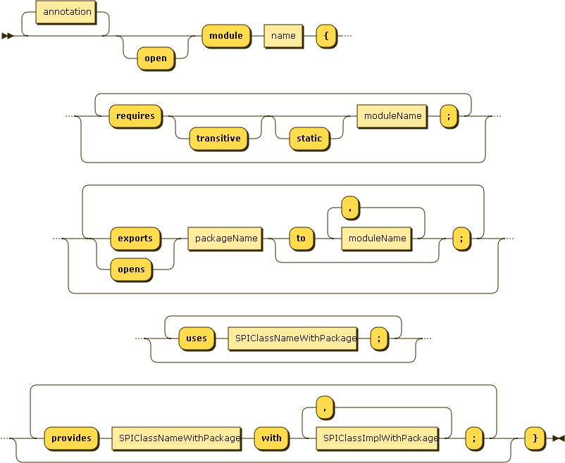

module org.wildcraft.eaz {
exports org.wildcraft.eaz;
}
//daz does not just exports it,
//It also exports eaz
module org.wildcraft.daz {
exports org.wildcraft.daz;
requires transitive org.wildcraft.eaz;
}
//By depending on daz,
//caz implicity depends on eaz
module org.wildcraft.caz {
requires org.wildcraft.daz;
}Java 9 Modules
By
Narendran Solai Sridharan
Key Items
Goals of JPMS
Problems in Module Systems
Modularity Maturity Model
Modular JDK
Module in Java
Working of Module System
Layers
Migration to Java 9
Goals of JPMS
Strong Encapsulation
Reliable Configuration
Scalable Java Platform
Greater Platform Integrity
Improved Performance
Problems in Module Systems
OSGI, JBoss Modules, Spring Dynamic Modules are few Modular Development Systems.
We face following problems like,
JAR hell / Classpath hell
shadowing
version conflict
Issue with Unexpressible & Transitive Dependencies
Complex Class Loading
Module Maturity Models
Current System

JPMS

Modular JDK

Module in Java
Everything is a module in Java 9.
Demo Time!!!
Notable Restrictions
Cyclic Dependencies
No Cycles in Dependency is allowed in JPMS

Split Packages
No two modules can have same package either it is exported or not.

No Multi Module Support
We cannot have more than one module in an module artifact, either it is a jar or jmod file.
Working of Module System
Module Path & Module Resolution
All modules should be placed in the Module path. Entire classpath is considered as one single "Unnamed" Module.
Types of Module Resolution
Compile Time Resolution
Run Time Resolution
Types of Modules

Automatic Modules
Unnamed Modules
Open Modules
Other kind of Classification
Aggregator Module
Incubator Modules
Impact on Reflection

Automatic Module
Upgrade an existing Module
Implicit Dependency
Optional Dependency
//gaz requires haz only at compile time
//It also depends on iaz implicitly
module org.wildcraft.gaz {
requires static org.wildcraft.haz;
}
//haz depends on iaz only at compile time
//it also export iaz
module org.wildcraft.haz {
exports org.wildcraft.haz;
requires transitive static org.wildcraft.iaz;
}
module org.wildcraft.iaz {
exports org.wildcraft.iaz;
}Versioning Modules
Testing Modules
Layers
Layers holds various modules.

Configuration and multi layers
In each layer one or more classloaders can be created based on Configuration.

Modularity Rail Road Diagram
